Changes in ManuelbastioniLAB 1.6.0: Graphical User Interface, usability and philosophy.
27 May 2017
Current lab production pipeline: pro and contra
Over a year ago, the first version of ManuelbastioniLAB was released. The goal was to create a laboratory to implement new ideas and algorithms (as the automodelling and the measure system, still experimental) in order to provide to Blender community a new powerful state-of-the-art tool in the field of 3d humanoid generation.
In these 15 months the resources were focused on:
- development of features
- development of an intuitive interface
- development of the anatomy-topology of the models
After the release of 1.5.0 new goals can be added to the existing list, for example the improvement of production pipeline.
Studying the software usability and listening to the community feedback, it was realized that the lab can be even more productive, standardized and easy-to-use just changing some elements of the current production pipeline philosophy.
Currently there are two main steps in using ManuelbastioniLAB:
- Definition of the humanoid: age, muscle mass, tone, face details, body proportions, measures, expression, proxies, pose-animation, ecc.
- Finalization of the humanoid, in order to transform it from a lab-character (suitable to be modified in the lab, but not usable in production) to a standard-character (suitable to be used in production, customizable by hand, but no longer editable with the lab tools).

This design has pro and contra.
The pro is that in a lab session the elements are "under control": there is only one character in the scene, with a well defined skeleton that use lab-standard bone names, an human mesh with an exact topology and with a series of custom properties to provide information to the lab engines. These conditions make the tools very stable and reliable.
The contra are that after the finalization, the lab expression library, the lab proxie fitting ,the lab pose library and the lab animation retargeting system are no longer usable. This creates redundant cycles in the production phase, for example the user needs to produce a finalized character for each animation.
Improvement and optimizations in production pipeline of ManuelbastioniLAB 1.6.0
Until now the lab was focused only on the editing of non-finalized models. After the finalization, the humanoid was out of the lab scope: a standard character to be posed and animated using the normal Blender tool. In 1.6.0 this behaviour will change.
We will have two production phases:
- Creation phase: definition of the body, the physiognomy and the appearance of the character. The model will be characterized with age, muscles, mass, face details, measures, skin shader and skin textures. This phase also includes the random generator, the automodelling, the character library, the definition of rest pose and the type of rigging to use (for example with inverse kinematic or not). Probably it will also include the fitting of hair and clothes[*].
- After-creation phase: use of finalized model during production. This phase includes the loading of poses and animation (with automatic retarget) and the control of the expressions.

With this new pipeline philosophy, that extends the scope of the lab to finalized models too, we will have many advantages:
- Clear separation between the creation and the usage of the character.
- Simplified interface, that will be also separated according to the two phases above.
- Clean code, with a separate module for the after creation tools.
The lab users will be able to change the animation, the pose and the expression on finalized character, without the needing to restart a creation session each time.

Of course, any design has its contra. In this case the main problem is that a finalized character can be subjected to customization from the user: it can have more or less bones than expected, different names, altered topology, different shapekeys ecc.
This is a challenge for the lab developer, that will try to handle all the cases. Anyway the recommendation will be to customize the topology and the skeleton only if absolutely necessary, considering that in case of noticeable changes the after-creation tools may not work.
This is a little cost in comparison with the benefits of the new pipeline.
[*] Under evaluation the possibility to move it to after-creation panel.